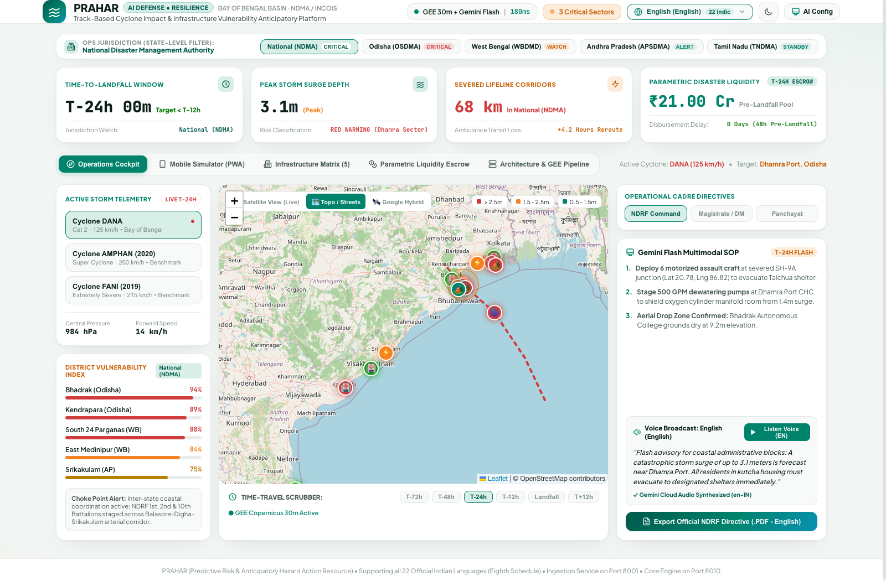
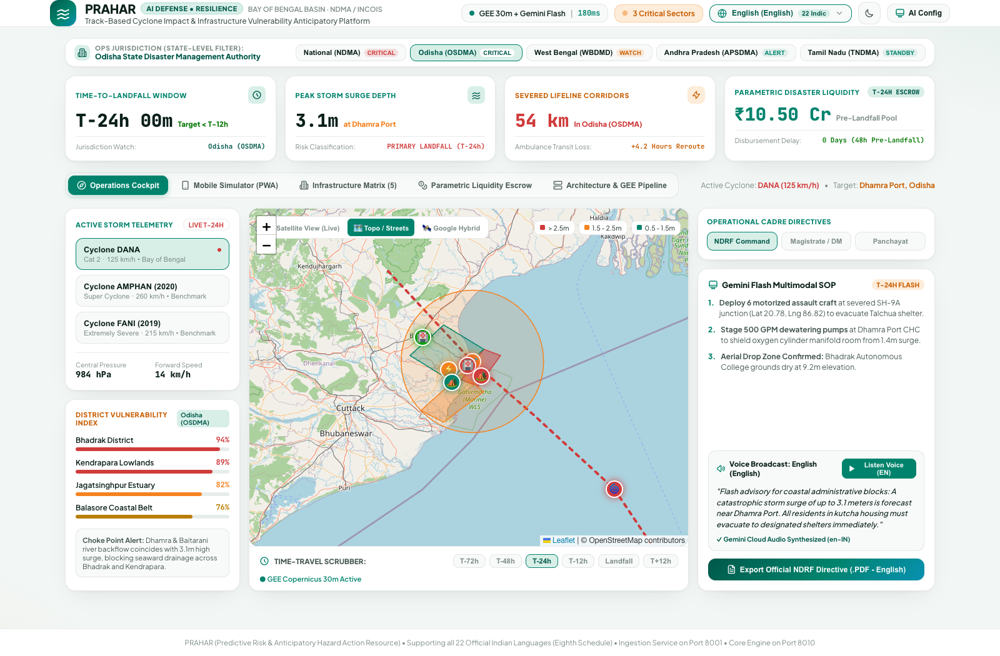
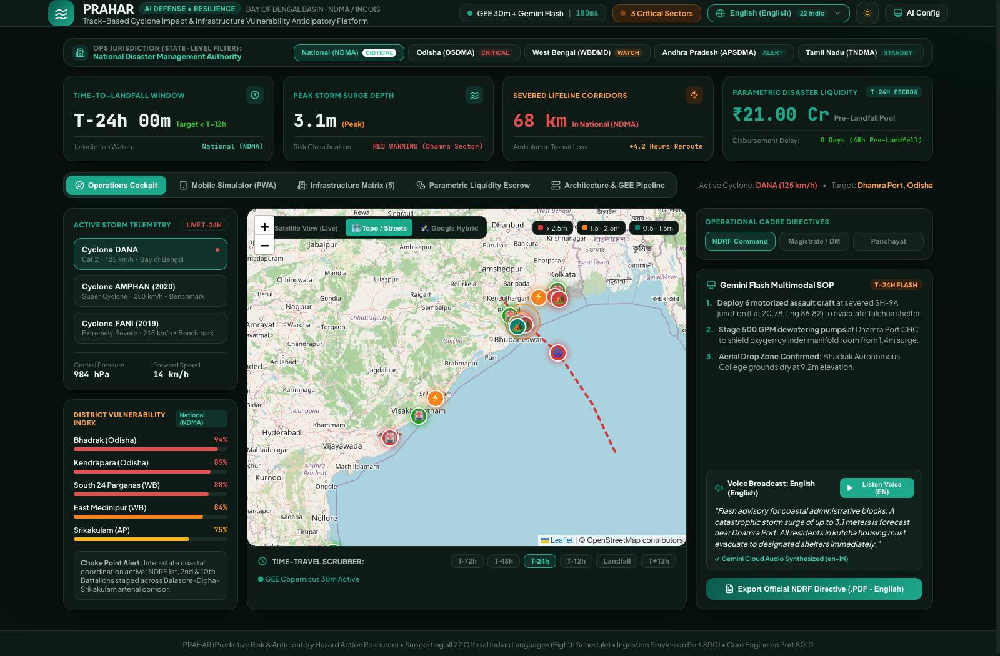
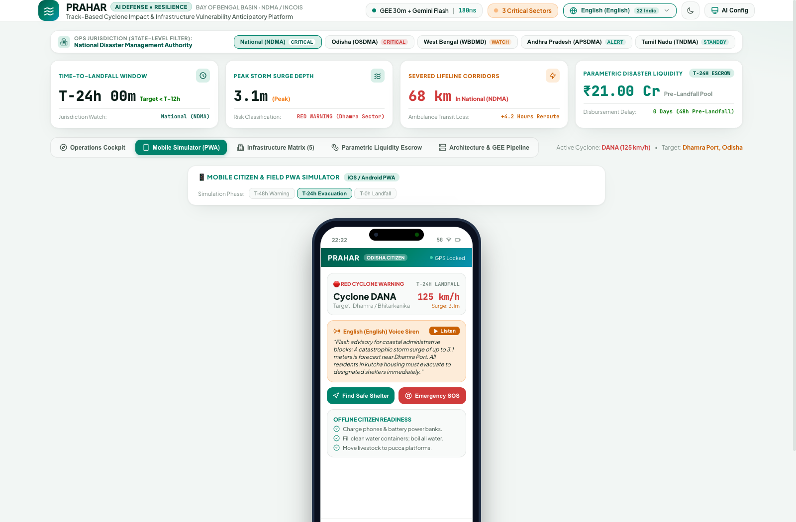
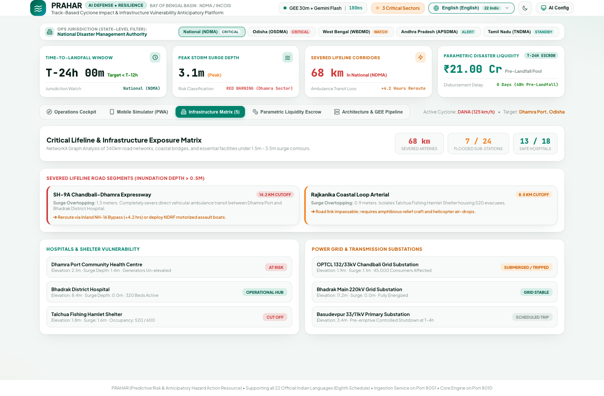
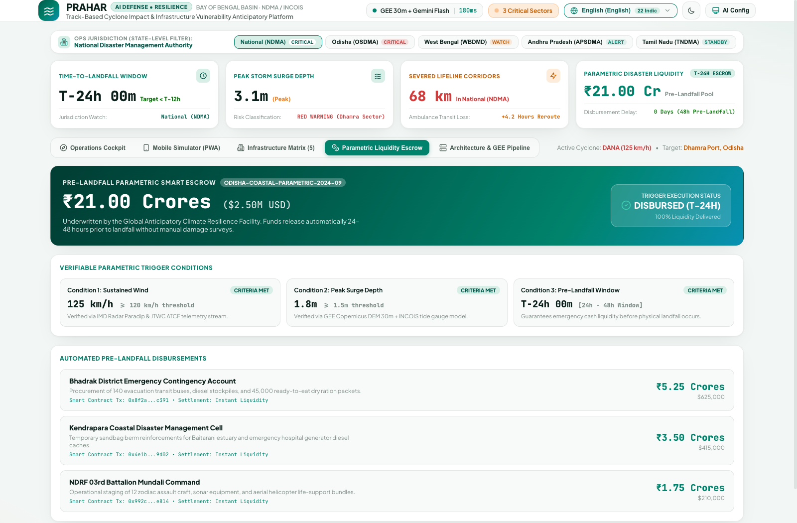
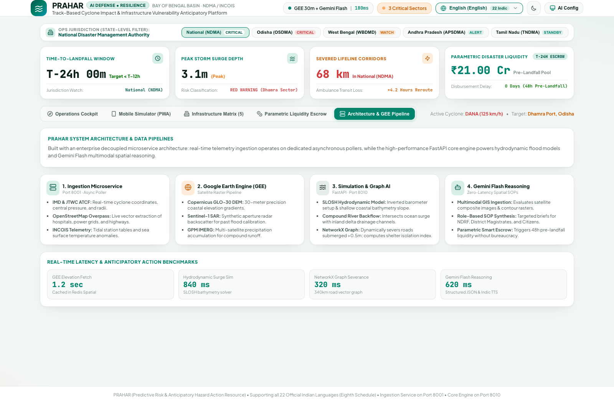

Predictive Risk & Anticipatory Hazard Action Resource
Track-Based Cyclone Impact & Infrastructure Vulnerability Forecaster for Bay of Bengal & Coastal APAC
Designed for District Magistrates, NDRF Commanders & State Disaster Authorities (OSDMA, WBDMD, APSDMA, TNDMA) to trigger anticipatory evacuations < T-12h before landfall.
Real-time ingestion of IMD bulletins, JTWC advisories, tide gauges, and Copernicus 30m GEE DEM elevation models.
Hydrodynamic coastal inundation envelopes across 3 surge hazard tiers (>2.5m, 1.5-2.5m, 0.5-1.5m).
Pinpoint severed CHCs, tripped substations, inundated roads, and cutoff cyclone shelters before surge strikes.
Gemini 1.5 Flash auto-drafts actionable tactical directives for NDRF, DMs, and Panchayats in 22 Indic tongues.
Automated pre-landfall liquidity escrow releasing emergency disaster cash at T-24h with zero claims latency.
Cyclone tracks from IMD, bathymetry from INCOIS, power grids, and hospital directories exist in isolated databases without unified spatial correlation.
Standard disaster dashboards update post-facto. Ground damage assessments occur 24-48 hours after coastal embankments are breached.
District Collectors rely on generic paper manuals unsuited for live dynamic water levels, leading to trapped civilians and flooded evacuation routes.
"The storm surge inundated the coastal arterial highway before the evacuation buses were dispatched."
Without predictive, track-based infrastructure vulnerability modeling, relief forces deploy blindly after lifelines sever. Coastal districts lose critical power and emergency medical access within hours.
Direct ingestion of live IMD track coordinates, JTWC advisories, Copernicus 30m DEM elevation, and OpenStreetMap infrastructure networks into a unified spatial graph.
Gemini 1.5 Flash evaluates hydrological choke points, drafting role-directed SOPs and generating multi-lingual Web Speech broadcasts across 22 official Indian languages.
Automated pre-landfall escrow releases emergency cash reserves at T-24h directly to SDRF accounts without bureaucratic verification delays or post-facto claims.

Live trajectory of Cyclone DANA (125 km/h) with 6-stage temporal scrubber from T-72h to Landfall.
Catastrophic (>2.5m red), Severe (1.5-2.5m orange), and Saline (0.5-1.5m green) inundation polygons.
Ranks Bhadrak (94%), Kendrapara (89%), and South 24 Parganas with hydrological choke point alerts.
Role-based tactical instructions for NDRF, District Collectors, and Panchayats.


1-click filtering across National (NDMA), Odisha (OSDMA), West Bengal (WBDMD), Andhra Pradesh (APSDMA), and Tamil Nadu (TNDMA) automatically re-centers GIS and updates state-specific choke points and asset markers.
Native translations and instant Web Speech audio broadcasts for Odia, Bengali, Telugu, Tamil, Hindi, Marathi, Gujarati, etc. Dark Mode supports 24/7 command center screening without visual fatigue.

Pre-caches elevation maps and shelter waypoints. Fully functional even when mobile towers lose power or backhaul connections.
Real-time routing diverts citizens away from flooded roads toward elevated shelters with verified remaining capacity.
Broadcasts GPS coordinates, battery level, and family count to district emergency operations centers.
Digital QR credentials enable immediate ration and relief fund verification at local evacuation shelters.

Elevation vs surge calculation flags oxygen manifold flooding and power cutoffs before breach.
Tripping predictions prevent equipment burnout and identify affected consumer counts.
Live capacity tracking and road severance warnings dispatch amphibious assault craft.
Identifies specific road cuts (e.g. SH-9A) causing ambulance reroutes of 4.2+ hours.

V_dist = 0.45·(S_peak / E_mean) + 0.35·(C_sev / C_tot) + 0.20·ρ_kutcha
Funds disburse automatically at T-24h once storm track and surge thresholds are confirmed by IMD feeds.
Allocates ₹21.00 Cr pool directly to impacted coastal state SDRF accounts (e.g. ₹10.5 Cr Odisha, ₹5.25 Cr WB).
Every payout is logged with verifiable SHA-256 block hashes preventing administrative diversion.

Deployable across National, State & District Disaster Authorities in under 48 hours with zero structural changes to legacy data.